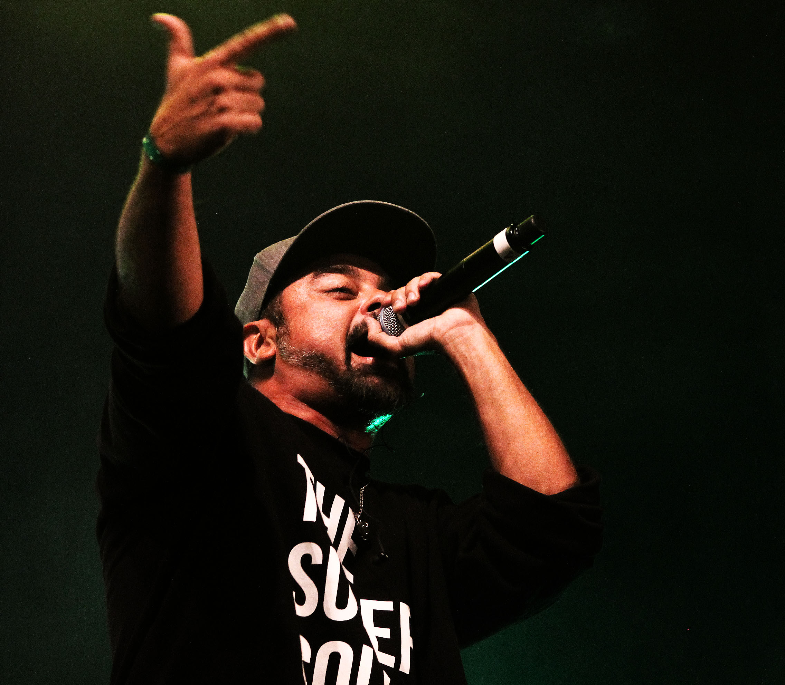

<!DOCTYPE html>
<html lang="en">
<head>
    <meta charset="UTF-8">
    <meta http-equiv="X-UA-Compatible" content="IE=edge">
    <meta name="viewport" content="width=device-width, initial-scale=1.0">
    <title>Las aventuras de nach. </title>
    <link rel="stylesheet" href="mis estilos.css">
    <body style="background-color: salmon;" >  </body>
</head>
<!-- <body style="background-color: salmon;"> -->
    <h1 style="text-align: center; color: rgb(216, 104, 25); font-size: 150px; background-color: rgb(252, 203, 198)"><br> 
        "Las aventuras de Nach."
        <br> 
        <br>
     </h1>
     <h1>  </h1>
    <h2 style="text-align: center; color: rgb(216, 104, 25); background-color: rgb(252, 203, 198)"
    >Autor: Mateo Alberto </h2>
   

        
</html>

<h1 style="background-color: rgb(252, 203, 198); text-align: center;"> <em> Capítulo Dos: "N y la batalla" </em>


</h1>

<h1 style="background-color: rgb(196, 250, 241);text-align: justify;"> 
 <br>
    ¡3... 2... 1... TIEMPO! <br>
    Ese fue el grito grupal que daba inicio a la batalla,
    N ganó el piedra, papel y tijeras asi que tuvo la chance de elegir que empieze su rival.<br>
    -VEDER *Beatbox sonando: <br>
    ok, right now i can show how kill <br>
    because i am better rapper than you shit! <br>
    you now eminem he inspired in me <br> 
    and are they know hows ladygaga she inspired on he! <br> <br>
    -NACH *Beatbox sonando: <br>
    en verdad poco entendi dijiste algo de lady gaga <br> 
    y tambien de mierda siendo el que ahora se caga <br> 
    lavo tu cara como poncio pilato escoria <br> 
    si sos un judas de eso no hay duda no cambia la historia!<br><br>
    Luego de 2 rondas de rap más, pasaron a la instancia donde el jurado decide quien pasa.<br>
    ¡Jurado a la cuenta de 3... 2... 1...!<br>
    dos señalan a VEDER y uno da réplica.<br>
    Veder gano la batalla, lo cual en parte desmotivó bastante a Nach pero por otro lado mirando más positivo pensó que el simple hecho de haberse lanzado a probar valía más que cualquier votación.<br>
    Ya un poco más tranquilo a esas oscuras horas de la noche decidió ir retomando el camino hacia su casa y si llegaba a encontrar, necesitaba ir a un cajero.<br>
    Despues de haber hecho una cuadra a unos metros suyos ve volar un folleto que llamo su atención por los colores extraños.<br>
    De un impulso se lanzó hacia el con el fin de agarrarlo, en ese intervalo un extraño le grita:<br>
    -Extraño: ¡kid! what are you doing at this time in the street? go your home.<br>
    El folleto pasó a un segundo plano, se concentró en entender al hombre.<br>
    -Nach: hi, puedes speak more slow?<br>
    -Extraño: Ya muchacho dejemosnos de cuentos, ¿qué estás haciendo a esta hora en la calle?<br>
    -N: solo daba vueltas, ¿qué tanto te interesa? <br>
    -E: si te pregunto debe ser por algo, míra, lo voy a decir de la forma mas sencilla que pueda, no me conoces pero yo a ti sí. <br> 
    Es irrelevante porque lo hago, ya lo entenderás con el paso del tiempo, lo que debes entender es que no puedes seguir estando en esta ciudad. <br>
    Hay peligros, los cuáles desconoces y es mejor que por el momento así sea. <br>
    ¡Véte, hazme caso, me lo agradecerás! <br>
    N sólo se retiro sin decir nada, aún cuando su cabeza queria hacer preguntas acerca de lo que hace un momento tuvo que procesar. <br>

</h1>
<br>
<h1 style="background-color: rgb(252, 203, 198);text-align: center;"> <br>
    <a href="index.html"> Opción A: </a> Próximamente - Volver a buscar al extraño y hacerle preguntas.
    <br>
    <br>
    <a href="index.html" > Opción B: </a> Próximamente - Seguir camino hacia su casa.
    <br> <br>
    </h1>
<a style="background: rgb(196, 250, 241);" href="index.html"> Volver al inicio. </a>